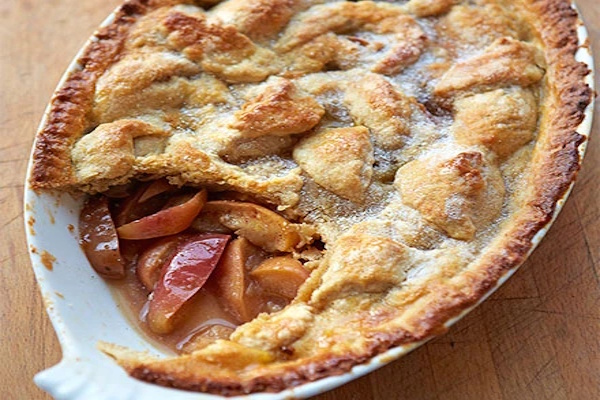

Easy apple pie
BBC Good Food

- 225g plain flour
- 140g butteror margarine
- 3 large cooking apples
- 2 tbsp honey
- pinch of cinnamon
- pinch of mixed spice
- 1 egg-beaten
- crème fraîche(to serve)
Step 1
Heat oven to 200C/180C fan/gas 6. To make the pastry, sift the flour into
a large mixing bowl and add the butter or margarine. Using your fingers,
mix together until the mixture resembles breadcrumbs.
Step 2
Add about 3 tbsp cold water - 1 tbsp at a time - to bind the mixture into a ball.
Then wrap it in cling film and leave to chill in the fridge while you prepare
the apples, or for 30 mins if you have time.
Step 3
While the pastry is chilling, core the apples, then cut into even-sized chunks
so they all cook in the same amount of time.
Put the apples into the pie dish, drizzle over the honey and add the cinnamon,
mixed spice and about 2 tbsp water.
Step 4
Roll out the pastry on a floured work surface until it is large enough to cover
the pie dish. Using the rolling pin, carefully lift the pastry and lay it over
the top of the apple mixture. Carefully trim off the excess pastry
(this can be rerolled and cut into shapes to decorate the pie crust if you like)
and press the pastry edges onto the dish to create a seal.
Step 5
Make a small cut in the pastry so that the air can escape during cooking,
then brush with beaten egg to glaze.
Step 6
Bake the pie in the oven for 20-30 mins until the pastry is golden and sandy
in appearance and the apple filling is bubbling and hot.
Serve while still warm with crème fraîche, ice cream or natural yogurt.